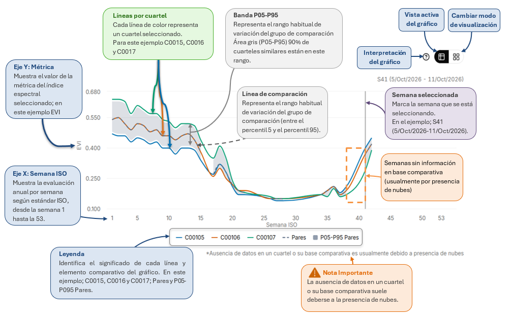

1
Observación satelital
Imágenes Sentinel-2 organizadas por semana.
La Plataforma de Monitoreo Satelital Agrícola para la Adaptación al Cambio Climático integra imágenes satelitales, indicadores espectrales y análisis espacial y temporal para proporcionar información periódica sobre los cultivos de la Región de Valparaíso.
Su metodología organiza los datos en tres niveles —agricultor, predio y cuartel—, analiza la evolución semanal de la vegetación y permite comparar sus resultados con referencias históricas o con cuarteles similares de la misma zona y cultivo.
De la imagen satelital a la decisión agrícola. Pasa el cursor sobre cada etapa para verla en detalle.
Imágenes Sentinel-2 organizadas por semana.
NDVI, EVI, NDMI y otros índices.
Agricultor → Predio → Cuartel.
Dashboard · Gráficos temporales · Mapas.
Los índices muestran señales, no diagnósticos automáticos.
Los índices espectrales son indicadores que se calculan a partir de imágenes satelitales y permiten obtener información sobre el estado y comportamiento de los cultivos. Para ello, se utilizan distintas bandas espectrales, que registran cómo la vegetación refleja la energía solar en diferentes longitudes de onda. Mediante la combinación de estas bandas es posible estimar características de los cultivos, como su vigor, cobertura vegetal, contenido de clorofila y condiciones relacionadas con el agua presente en la vegetación.
En agricultura, estos índices permiten observar cómo cambian los cultivos a lo largo del tiempo e identificar diferencias dentro de un mismo predio o cuartel. Estas variaciones pueden estar relacionadas con el crecimiento de las plantas, la disponibilidad de agua, las condiciones ambientales o las prácticas de manejo agrícola. De esta manera, los índices espectrales proporcionan información útil para el seguimiento de los cultivos y ayudan a identificar sectores que podrían requerir mayor atención. Sin embargo, sus valores no permiten determinar por sí solos la causa de un problema, por lo que deben interpretarse considerando el tipo de cultivo, su etapa de desarrollo y las observaciones realizadas en terreno.
Haz clic en un índice para conocer qué permite observar, su fórmula y su uso agronómico.
Descripciones, fórmulas y bandas basadas en Sentinel Hub Custom Scripts — Sentinel-2.
| Si necesitas observar… | Índices recomendados |
|---|---|
| Cobertura vegetal y actividad general del cultivo | |
| Vegetación en cultivos de cobertura densa | |
| Diferencias relacionadas con clorofila | |
| Vegetación con mucho suelo visible | |
| Cambios relacionados con el agua de la vegetación | |
| Presencia de agua superficial | |
| Senescencia y cambios de pigmentos |
Cada gráfico de la plataforma sigue la misma lógica. Haz clic en la imagen para ampliarla.

Ingresa a la plataforma para ver mapas, gráficos y comparaciones semanales.